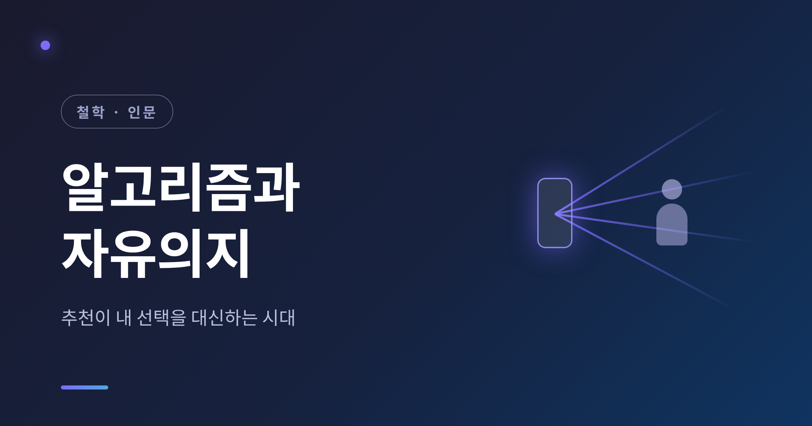
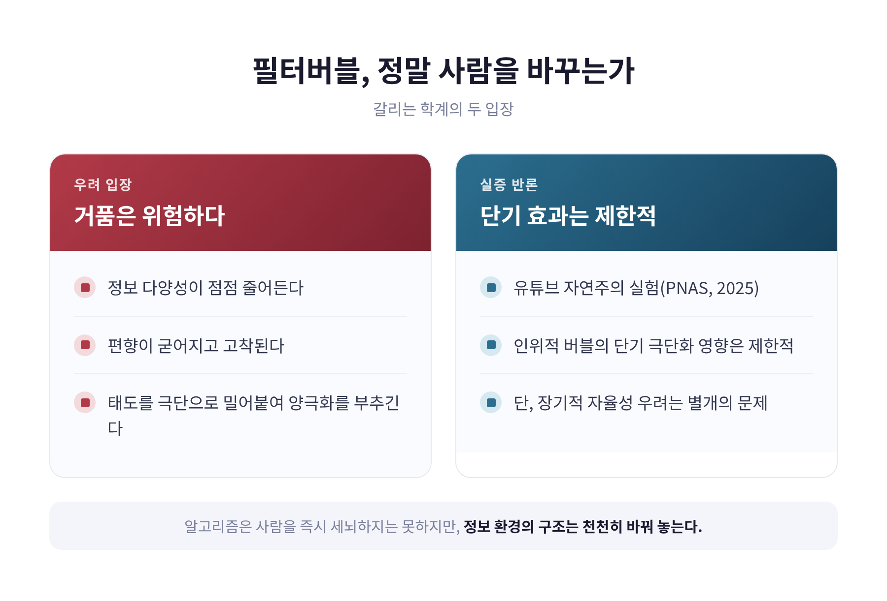
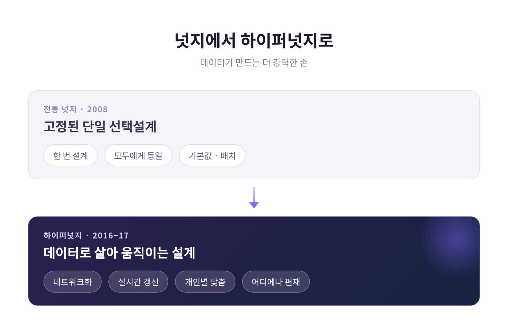
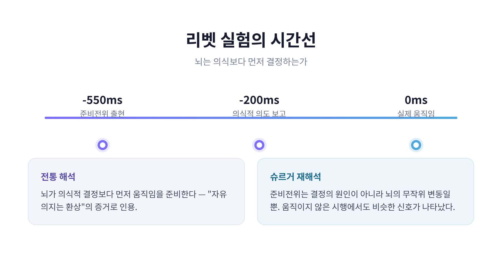

알고리즘과 자유의지 — 추천이 내 선택을 대신하는 시대

이번 글에서는 추천 알고리즘이 우리의 선택을 대신하는 시대에 '자유의지'가 여전히 유효한지를 정리해 보겠습니다.
결론부터 말씀드립니다. 알고리즘은 우리를 즉시 세뇌하지는 못합니다. 다만 우리가 선택하는 '환경'을 조용히 바꿔 놓습니다. 그래서 자유의지의 문제는 '추천을 거부하는 능력'이 아니라 '추천을 의식하고 다루는 능력'으로 다시 정의되어야 합니다.
아침에 눈을 떠서 처음 보는 영상, 점심에 고르는 메뉴, 저녁에 듣는 음악. 그 대부분이 추천을 거쳐 옵니다. 우리는 정말로 '스스로' 고른 걸까요. 오늘은 이 물음을 기술과 철학 양쪽에서 함께 들여다봅니다.
필터버블 — 거품 안에서 보는 세상
필터버블이라는 말은 2011년 엘리 패리저가 처음 대중화했습니다.
그는 TED 강연 "Beware online filter bubbles"와 동명의 저서에서, 구글이 검색 결과를 개인화하기 시작한 변화를 비판하며 이 용어를 꺼냈습니다.
뜻은 이렇습니다. 웹 기업이 내 위치, 과거 행동, 검색 기록을 바탕으로 정보를 취향에 맞게 재단하면서, 정작 내 세계관에 도전하거나 그것을 넓혀 줄 정보로부터는 점점 멀어진다는 것. 그렇게 우리는 각자의 '거품' 안에 갇힙니다.
패리저의 주장은 단호했습니다. 추천 알고리즘은 일부 생각은 키우고 다른 생각은 보이지 않게 만든다고요. 그는 이것이 개인에게도, 민주주의에도 해롭다고 봤습니다.
예전엔 신문 한 부를 펼치면 관심 없던 면도 눈에 들어왔습니다. 지금은 관심 가질 만한 것만 골라서 눈앞에 옵니다.
균형 잡힌 정보 식단 대신, 이미 가진 관심사를 강화하는 정보만 마주하게 된다는 지적입니다.
그런데 필터버블은 정말 사람을 바꾸는가
여기서부터는 신중해야 합니다. 학계의 의견이 갈리기 때문입니다.
한쪽은 우려합니다. 개인화 추천이 정보 다양성을 줄이고, 태도를 극단으로 밀어붙이며, 양극화를 부추긴다는 입장입니다. 시간이 지날수록 다양성은 줄고 편향은 굳어진다고 봅니다.
다른 한쪽은 실증으로 반론합니다. 2025년 5월 PNAS에 실린 하버드 정부학과 연구진의 유튜브 자연주의 실험이 대표적입니다.
이 연구는 추천을 일부러 조작해 인위적인 필터버블과 '토끼굴'을 만들어 봤습니다. 그런데 적어도 단기적으로는 의견에 미치는 영향이 제한적이었습니다.
그렇다면 필터버블은 괜한 걱정일까요. 그렇게 단정하기는 이릅니다.
연구자들 스스로 이것이 '단기 효과'임을 분명히 했습니다. 문헌 전반이 제기해 온 장기적인 자율성·선택권 우려를 부정하는 결과는 아닙니다.

"알고리즘은 사람을 즉시 세뇌하지는 못하지만, 정보 환경의 구조는 천천히 바꿔 놓는다."
넛지 — 떠밀지 않고 슬쩍 미는 손
선택의 문제를 이해하려면 '넛지'를 짚어야 합니다.
넛지 이론은 2008년 경제학자 리처드 탈러와 법학자 캐스 선스타인이 제시했습니다.
넛지란 어떤 선택지도 금지하지 않고, 경제적 유인을 크게 바꾸지도 않으면서, 사람들의 행동을 예측 가능한 방향으로 바꾸는 선택설계의 모든 측면을 말합니다.
쉽게 말해, 선택지를 '배치하는 방식'만 바꿔서 우리를 특정 방향으로 슬쩍 미는 것입니다.
이를 떠받치는 철학이 '자유주의적 개입주의'입니다. 선택의 자유는 침해하지 않으니 자유주의적이고, 개인의 후생을 높이는 방향으로 유도하니 개입주의적이라는 설명입니다.
고전적 사례는 꽤 인상적입니다.
- 장기기증을 '기본 동의'로 설정하자 동의율이 한 자릿수에서 90% 이상으로 뛰었습니다.
- 암스테르담 공항 소변기에 파리 그림을 그려 넣자 청소 비용이 약 80% 줄었습니다.
- 자동 가입형 연금('Save More Tomorrow')은 저축률을 끌어올렸습니다.
디지털 세계에서는 더 흔합니다. 소프트웨어의 기본 옵션을 어떻게 정해 두느냐가 대표적인 디지털 넛지입니다.
다른 선택을 자유롭게 할 수 있으니 허용된다고 봅니다. 다만, 우리가 그 기본값을 그대로 따르는 경우가 훨씬 많다는 점은 기억해 둘 만합니다.
하이퍼넛지 — 데이터가 만드는 강력한 손
문제는 알고리즘 시대의 넛지가 예전과 질적으로 다르다는 데 있습니다.
법학자 캐런 영은 2016~2017년 논문에서 '하이퍼넛지(Hypernudge)'라는 용어를 만들었습니다.
대량의 사용자 데이터와 머신러닝을 써서, 고도로 개인화된 방식으로 의사결정을 유도하는 강력한 버전의 넛지를 가리킵니다.
작동 방식은 이렇습니다. 빅데이터 알고리즘은 사람의 인지로는 잡아낼 수 없는 패턴을 데이터에서 뽑아냅니다. 특정 정보에 '현저성'을 부여하고, 프라이밍 기법으로 내가 선택하는 맥락 자체를 동적으로 다시 짭니다.
전통 넛지와 결정적으로 다른 점이 있습니다.
빅데이터 넛지는 네트워크로 연결돼 있고, 끊임없이 갱신되며, 동적이고, 어디에나 존재합니다. 그래서 극도로 강력하고, 잠재적으로 위험합니다. 영이 굳이 '하이퍼'를 붙인 이유입니다.

영은 이런 우려를 남겼습니다. 이 기법의 정당성 문제는 개인의 고지·동의만으로는 만족스럽게 풀리지 않는다고요. 상업적 이해가 이끄는 빅데이터 기법이 별다른 제약 없이 계속 나아간다면, 민주주의와 인간 번영에 곤란한 함의가 있다는 것입니다.
후속 연구(2024년 'AI and Ethics')는 한 걸음 더 나아가, 하이퍼넛지가 우리의 '도덕적 자율성'에 위협이 되는지를 본격적으로 따집니다.
주의력 경제와 다크패턴 — 빼앗기는 집중
오늘의 디지털 경제는 주의력을 두고 다툽니다.
경제적·설계적 유인이 주의력을 체계적으로 끌어모으는 쪽에 보상을 줍니다. 그 결과 사용자가 스스로 주의력을 관리하고 집중하는 능력이 오히려 떨어졌다는 지적이 나옵니다.
여기엔 '설득 기술'이라는 오래된 분야가 깔려 있습니다.
컴퓨터를 설득의 도구로 보는 이 접근은, 또래 압력·욕망·트리거 같은 기법으로 종종 사용자가 알아채지 못한 사이에 작동합니다. AI는 사용자 데이터를 프로파일링해, 빠르고 원초적인 'System 1'에 인식 없이 영향을 주는 방식으로 의사결정을 약화시킬 수 있습니다.
그 끝에 '다크패턴'이 있습니다.
다크패턴은 소비자의 자율성과 판단을 무너뜨리도록 설계된 디지털 선택설계입니다. 심리적 취약성과 인지 편향을 파고들어, 사용자 후생보다 제공자의 이익을 앞세웁니다.
무한 스크롤, 자동재생, 게임처럼 설계된 참여 지표. 한 번쯤 '벗어나야지' 하면서도 손을 떼지 못했던 그 장치들입니다.
이것이 위협하는 것은 단순한 시간 낭비가 아닙니다. 자율성, 프라이버시, 그리고 의견을 형성하고 표현할 권리 같은 기본권과 맞닿아 있다는 경고입니다.
그렇다면 자유의지란 무엇인가 — 오래된 논쟁
기술 이야기를 잠시 멈추고, 더 깊은 물음으로 들어갑니다.
애초에 '자유의지'란 무엇일까요.
철학에서 자유의지 문제는 자유의지와 결정론이 양립할 수 있는가를 둘러싼 논쟁입니다. 자유의지는 흔히 도덕적 책임의 필요조건으로 여겨지기에, 이 논쟁은 책임과 결정론의 양립 문제로도 표현됩니다.
입장은 크게 갈립니다.
- 양립가능론: 세계가 인과적으로 결정돼 있어도, 우리는 의미 있는 자유와 책임을 가질 수 있다.
- 양립불가능론: 자유의지와 결정론은 함께 갈 수 없다. 여기서 다시 나뉩니다.
- 자유지상주의: 적어도 일부 사람은 자유의지를 가지며, 따라서 결정론은 거짓이다.
- 강한 결정론: 결정론이 참이므로 누구도 자유의지를 갖지 않는다.
- 강한 양립불가능론: 결정론의 참·거짓과 무관하게 자유의지는 없다.
이 오래된 논쟁은 지금의 문제와 곧장 이어집니다.
알고리즘 추천을 일종의 '외부적 결정 요인'으로 본다면, 물음은 이렇게 바뀝니다. "추천에 따라 선택해도, 그것은 여전히 나의 자유로운 선택인가?"
양립가능론의 디지털 버전인 셈입니다.
뇌는 이미 결정했는가 — 리벳 실험의 두 얼굴
자유의지 논쟁에서 빠지지 않는 실험이 있습니다.
1983년 신경과학자 벤저민 리벳의 실험입니다.
참가자에게 원할 때 손가락을 움직이게 하고, EEG로 뇌 활동을 기록했습니다. 동시에 시계 다이얼을 보며 '움직이려는 의도를 처음 느낀 순간'을 보고하게 했습니다.
결과가 충격적이었습니다. 준비전위는 움직임 약 550밀리초 전에 나타났고, 의식적 의도를 보고한 것은 움직임 200밀리초 전이었습니다.
뇌가 의식적 결정보다 먼저 움직임을 준비한다는 뜻으로 읽혔습니다. 그래서 오랫동안 '자유의지는 환상'이라는 증거로 인용됐습니다.
그러나 최근 해석은 다릅니다.
신경과학자 아론 슈르거는 준비전위가 결정의 유일한 원인이 아니라, 뇌에 이미 존재하는 무작위 변동일 뿐이라고 제안합니다. 실제로 참가자가 움직이지 않기로 한 시행에서도 비슷한 신호가 나타났다고 합니다.

그래서 결론은 어느 한쪽으로 기울지 않습니다.
리벳 실험은 자유의지를 반증하지도, 입증하지도 못합니다. 신경과학조차 자유의지를 확정적으로 부정하지는 못하는 셈입니다.
자율성을 되찾는 법 — 거부가 아니라 의식
그렇다면 우리는 무력하게 떠밀려야만 할까요. 그렇지는 않습니다.
최근 연구들은 '디지털 자율성'을 되찾는 방향을 제시합니다.
디지털 웰빙은 점점 '내 의도와 디지털 행동 사이의 조화로운 정렬'로 정의됩니다. 자율성·역량·관계성이라는 세 가지 욕구가 디지털 사용의 만족도를 좌우한다고 봅니다.
출발점으로는 미디어 리터러시가 꼽힙니다. 알고리즘이 어떻게 작동하는지 아는 것이, 자율성을 되찾는 첫걸음이라는 것입니다.
실제로 효과가 검증된 사례도 있습니다.
인스타그램에서 사용자와 함께 설계한 '적시 프롬프트'는 자율성과 프라이버시를 해치지 않으면서 과사용을 줄이고 웰빙을 높였습니다.
또 다른 방향은 '의도 인식 설계'입니다. 사용자가 원래 의도에서 벗어날 때 그것을 상기시켜 주되, 개입의 정도는 사용자가 직접 조정하도록 자율성을 온전히 넘기는 방식입니다.
물론 이런 도구가 만능은 아닙니다. 사용 시간 제한, 알림 차단 같은 자기통제 도구의 효과는 도구와 맥락에 따라 들쭉날쭉하다는 것이 메타분석의 결론입니다.
그래도 한 가지는 분명해 보입니다. 감정을 조절하고 적응적으로 대처하는 힘이, '디지털 역량'과 '디지털 의존'을 가르는 핵심이라는 점입니다.
끝으로 한 마디만 더 드리겠습니다.
알고리즘이 우리의 선택을 대신하는 시대에, 자유의지를 '추천을 완전히 거부하는 능력'으로 정의하면 우리는 이미 진 싸움을 하는 셈입니다. 거부는 현실적으로 어렵고, 때로는 손해이기도 합니다.
오히려 이렇게 생각해 봅니다.
— 자유란 추천을 끊는 것이 아니라, 추천을 의식하고 내 의도와 견주어 능동적으로 다루는 힘이다.
결정된 환경 속에서도 실천적 자율성은 가능하다는 양립가능론의 결론입니다.
추천이 띄워 준 다음 영상 앞에서, "지금 이걸 내가 정말 보고 싶은가"를 한 번 묻는 것. 어쩌면 자유의지는 거기서부터 다시 시작되는지도 모릅니다.